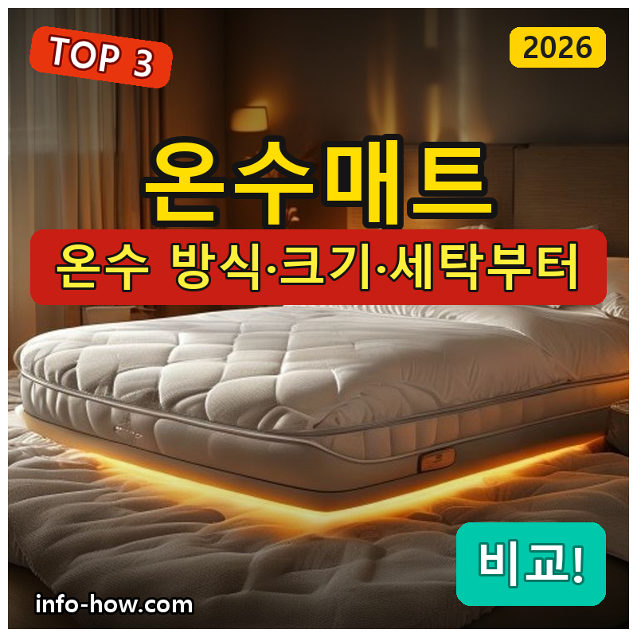
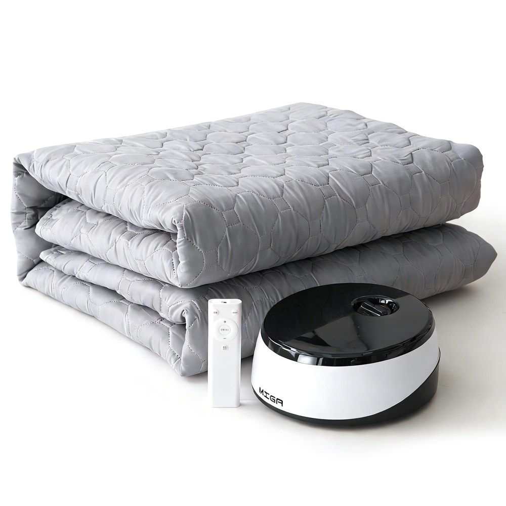
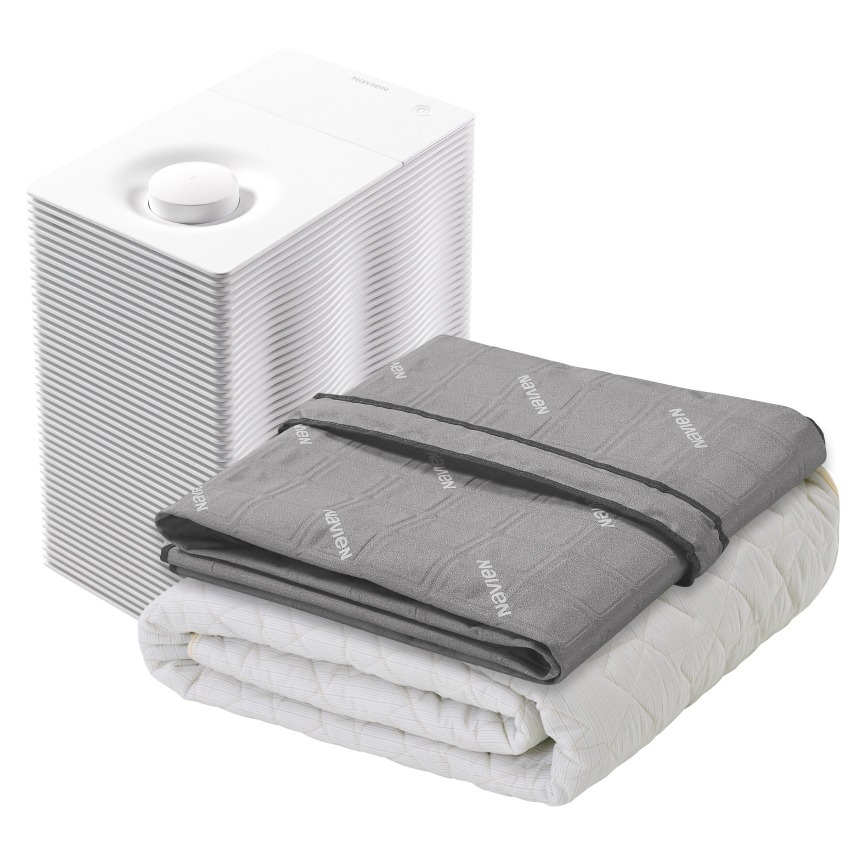

홈 › 제품리뷰 › 생활/가전
온수매트, 가성비냐 사계절 냉온수냐
작성: 생활서식 모음 · 2026-07-22

파트너스 활동의 일환으로 일정액의 수수료를 지급받습니다
🛒 오늘의 쿠팡 특가 보러가기 →
온수매트, 전기장판보다 좋다는데 뭘 살지 고민되죠?
핵심은 "온수 방식(소음)과 크기, 세탁" 3대 를※ 온수매트는 난방용 생활가전이며, 특정 질환의 치료 효과를 보증하지 않습니다.
📋 목차
온수매트, 가성비냐 사계절 냉온수냐 — 결론 먼저 스펙 비교표: 한눈에 보기 온수매트 고를 때 봐야 할 4가지 가성비냐 사계절이냐, 뭘 사야 할까? 자주 묻는 질문 (FAQ) 결론: 한 줄 요약
온수매트, 가성비냐 사계절 냉온수냐 — 결론 먼저
온수매트는 "보일러 소음과 크기, 세탁" 으로 갈려요.비나잇 워셔블 퀸 이 무난합니다. 혼자 저렴하게면 가성비 스마트터치, 사계절 냉·온수까지면 나비엔 프리미엄입니다.
1 1인·가성비 (가성비 초이스)
가성비

6만원대 무소음 터치
1. MIGA 스마트 터치식 온수매트
6만원대 온수매트 전자파 걱정 적은 온수 방식 무소음 지향 설계
대형·사계절은 아니어도
추천 대상
혼자 쓰는 1인용 온수매트가 필요한 분 전기장판 전자파가 신경 쓰이는 분 저렴하게 온수매트를 시작할 분 장점
6만원대로 온수매트를 부담 없이 마련 온수(물 순환) 방식이라 전기장판 대비 전자파 걱정이 적음 터치 조작·무소음 지향으로 사용이 편함 단점
1인용 위주라 부부·대형, 사계절 냉수는 상위 제품이 나음 이 제품은 1인·가성비용 입니다. 세탁·부부용이면 2번 워셔블, 여름 냉수까지면 3번 냉온수로 가세요. "혼자 저렴하게"면 가성비 최고예요.
한줄 리뷰
"온수매트 처음, 혼자, 전자파는 신경"이면 6만원대로 시작하기 좋습니다. 온수라 은은하게 따뜻해요. 세탁·부부·냉수면 2·3번을 보세요.
주요 스펙
제품: MIGA 스마트 터치식 온수매트 방식: 온수(물 순환) · 무소음 지향 크기: 1인용 배송: 로켓배송 가격: 약 63,590원 (변동 가능) ※ 실제 스펙·가격과 차이가 있을 수 있습니다
2 부부·세탁 (베스트 초이스)
베스트
워셔블 퀸·양면
2. 비나잇 워셔블 온수매트 (퀸)
통째 세탁(워셔블) 위생 퀸 사이즈 부부용 리모컨·양면 사용
통째 빨아 쓰는 위생에
추천 대상
위생을 위해 세탁이 되는 매트를 원하는 분 부부·2인이 퀸 사이즈로 쓰는 분 리모컨 편의를 원하는 분 장점
워셔블이라 통째 세탁이 가능해 위생 관리가 편함 퀸 사이즈+양면 사용으로 부부가 넉넉하게 리모컨으로 온도 조절이 편리 단점
여름 냉수 기능은 없어, 사계절이면 3번이 나음 혼자 저렴하게면 1번, 여름 냉수까지면 3번 냉온수입니다. 2번은 "세탁 위생+부부 크기" 의 실속 구간 — 위생·2인 난방에 무난합니다.
한줄 리뷰
"땀·위생 때문에 세탁이 되는 게 좋다"는 부부에게 워셔블 퀸이 편합니다. 통째 빨 수 있어요. 여름 냉수까지 원하면 3번을 보세요.
주요 스펙
제품: 비나잇 워셔블 온수매트 (퀸 1500×1900) 방식: 온수 · 워셔블(세탁) · 양면 크기: 퀸(부부) 배송: 일반배송 가격: 약 289,000원 (변동 가능) ※ 실제 스펙·가격과 차이가 있을 수 있습니다
3 사계절·프리미엄 (프리미엄)
프리미엄

나비엔 사계절 냉온수
3. 나비엔 사계절 냉온수 PRO 매트
겨울 온수+여름 냉수 나비엔 브랜드 완성도 슬림형+커버 세트
겨울은 따뜻, 여름은 시원
추천 대상
겨울 난방+여름 냉방을 한 매트로 원하는 분 나비엔 브랜드 완성도·A/S를 중시하는 분 사계절 사용으로 활용도를 높이려는 분 장점
겨울 온수+여름 냉수로 사계절 사용이 가능 나비엔 브랜드라 보일러·완성도·A/S가 안정적 슬림형+커버 세트로 침대에 깔끔하게 사용 단점
60만원대로 가격이 높고, 냉방까지라 구성이 복잡 혼자 저렴하게면 1번, 세탁·부부면 2번이 합리적입니다. 3번은 사계절(냉+온)·브랜드 를 원하는 분에게 값어치가 있습니다.
한줄 리뷰
"겨울 난방도, 여름 냉방도 한 매트로"면 나비엔 냉온수가 값을 합니다. 사계절 쓰니 활용도가 높아요. 겨울 난방만·가성비면 1·2번이 합리적입니다.
주요 스펙
제품: 나비엔 사계절 냉온수 PRO 슬림형 매트 (EMF503, 커버 세트) 방식: 온수+냉수(사계절) 강점: 브랜드 · 슬림 · 커버 세트 배송: 로켓배송 가격: 약 649,000원 (변동 가능) ※ 실제 스펙·가격과 차이가 있을 수 있습니다
스펙 비교표: 한눈에 보기
가격·풍량·무게 중 본인에게 중요한 기준부터 보세요. "최고" 표시는 3제품 중 객관적 1위 값입니다.
← 좌우로 스크롤 →
온수매트 고를 때 봐야 할 4가지
소음·크기·세탁만 챙겨도 후회를 줄입니다.
1) 온수(보일러) 방식 — 소음
온수매트는 보일러로 물을 데워 순환 → 전자파 걱정이 적음 보일러 펌프 소음이 있을 수 있어 무소음 표기 확인 취침 시 소음이 거슬리지 않는지 후기 확인 2) 크기 — 인원
1인용: 혼자 자는 요·이불 크기퀸/킹: 부부·넓은 침대침대 매트리스 크기에 맞춰 고르기 3) 세탁·위생 — 워셔블 여부
워셔블(통째 세탁)이면 위생 관리가 편함 커버 분리·세탁이 되는지 확인 땀·먼지가 신경 쓰이면 세탁 편의를 우선 4) 온도조절·안전 — 과열/저온화상
온도 세분화·타이머(자동 꺼짐)로 안전 확보 취침용은 저온 유지가 되면 저온화상 위험 감소 보일러 물 보충·관리 방법도 확인 가성비냐 사계절이냐, 뭘 사야 할까?
인원과 사용 계절만 정하면 답이 나옵니다.
혼자·가성비: 1번 MIGA → 6만원대부부·세탁 위생: 2번 비나잇 워셔블 퀸 → 위생사계절 냉+온: 3번 나비엔 → 여름까지자주 묻는 질문 (FAQ)
Q1. 온수매트가 전기장판보다 좋은가요? 장단이 다릅니다. 온수매트는 보일러로 데운 물을 순환시켜 전자파 걱정이 적고 은은한 온기가 장점이지만, 보일러 펌프 소음과 물 보충·관리가 있습니다. 전기장판은 빠르게 데워지고 간편하지만 전자파 저감 여부를 보게 됩니다. 전자파가 특히 걱정되거나 은은한 온기를 원하면 온수매트, 간편함·저렴함을 원하면 전기장판이 무난합니다.
Q2. 온수매트 보일러 소음이 심한가요? 제품에 따라 다릅니다. 보일러가 물을 순환시키며 펌프 소리가 날 수 있는데, 무소음·저소음을 강조한 제품은 취침에 방해가 덜합니다. 조용한 환경에서 잘 때 소음이 신경 쓰이면 무소음 표기 제품을 고르고, 소음 관련 실사용 후기를 확인하세요. 보일러를 침대에서 조금 떨어뜨려 두면 체감 소음이 줄기도 합니다.
Q3. 온수매트도 세탁이 되나요? 제품에 따라 다릅니다. 워셔블(통째 세탁) 제품은 매트를 통째로 빨 수 있어 위생 관리가 편하지만, 대부분은 물이 흐르는 관과 보일러 연결부가 있어 통째 세탁이 안 되고 커버만 분리 세탁합니다. 위생이 중요하면 워셔블 제품을, 그 외에는 커버 분리·세탁이 되는지 확인하세요. 보일러·연결부는 물에 넣으면 안 됩니다.
Q4. 온수매트 물은 어떻게 관리하나요? 제품 안내에 따라 주기적으로 물을 보충·교체합니다. 물이 부족하면 난방이 잘 안 되거나 보일러에 무리가 갈 수 있어, 물 부족 알림이 있는 제품이 편합니다. 보통 정수나 지정된 물을 사용하고, 장기 미사용 후에는 물 상태를 점검하는 것이 좋습니다. 자세한 관리 방법은 제품 설명서를 따르세요.
Q5. 온수매트 켜고 자도 저온화상 걱정 없나요? 저온으로 쓰고 안전 기능이 있으면 위험이 줄지만 주의가 필요합니다. 온수매트도 장시간 같은 부위에 따뜻함이 닿으면 저온화상 가능성이 있으므로, 취침 시 온도를 너무 높이지 않는 것이 좋습니다. 감각이 둔한 분(고령자·당뇨 등)은 특히 주의하고, 온도조절·타이머 기능을 활용하세요. 이상이 느껴지면 온도를 낮추거나 사용을 멈추세요.
결론: 한 줄 요약
1) MIGA 스마트터치 — 약 63,590원 / 1인·가성비. 6만원대 온수, 전자파 걱정 적게.2) 비나잇 워셔블 퀸 — 약 289,000원 / 부부·세탁. 통째 세탁 위생+퀸.3) 나비엔 냉온수 PRO — 약 649,000원 / 사계절. 겨울 온수+여름 냉수.이 포스팅은 쿠팡 파트너스 활동의 일환으로, 이에 따른 일정액의 수수료를 제공받습니다.